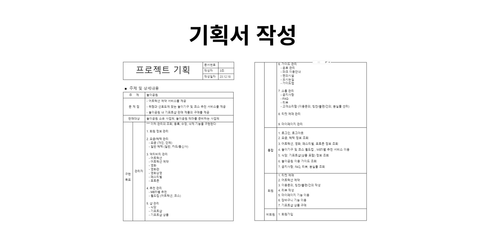
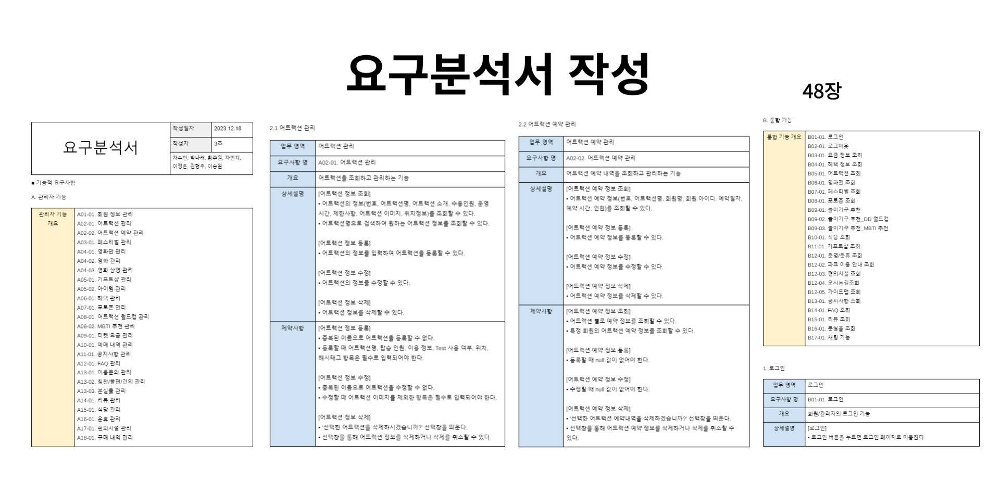
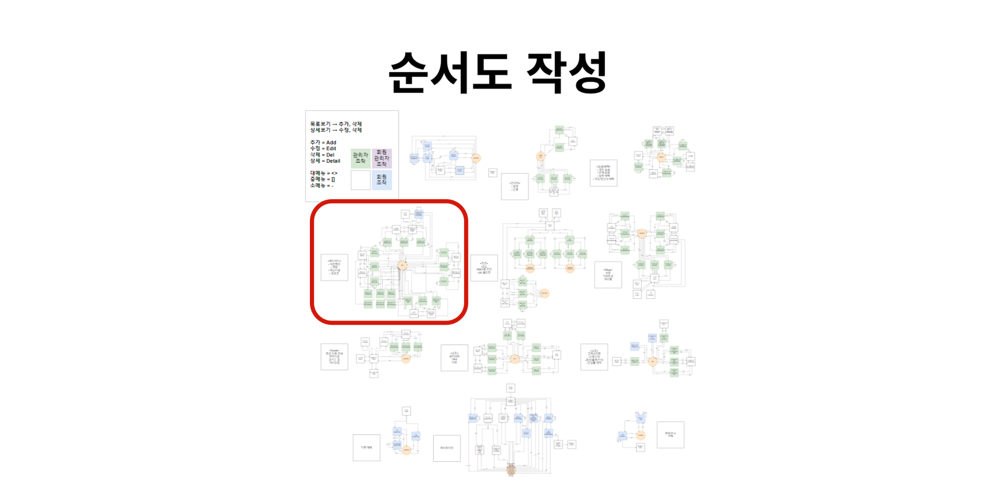
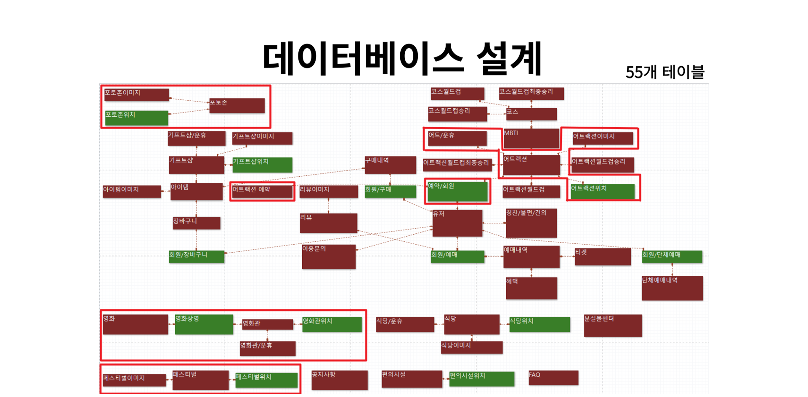
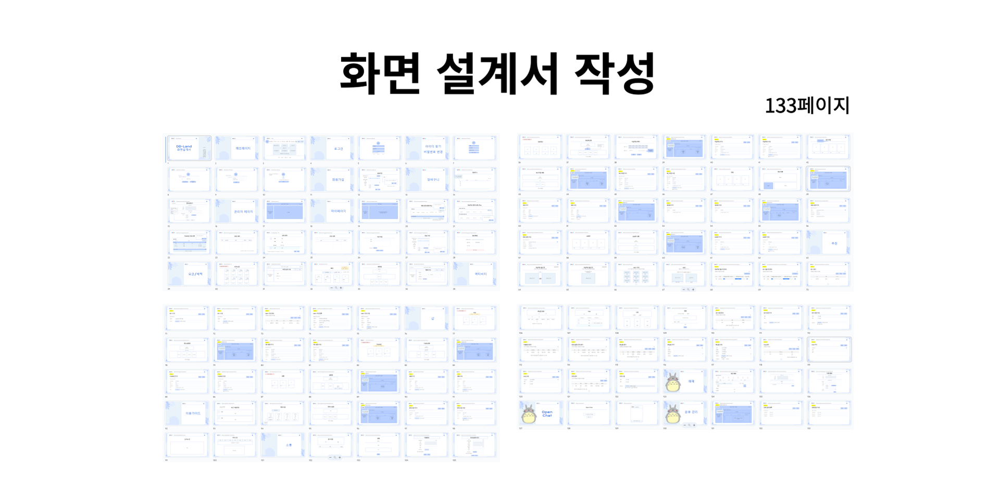
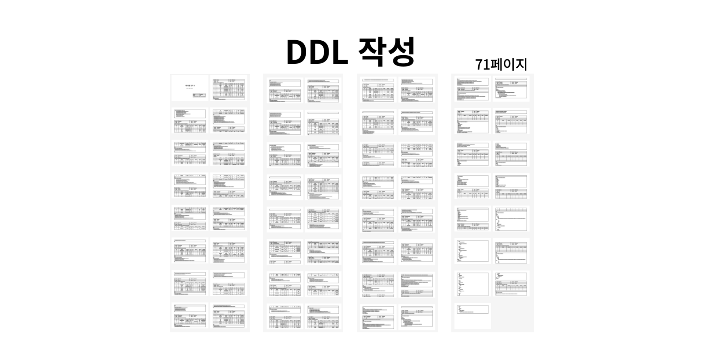
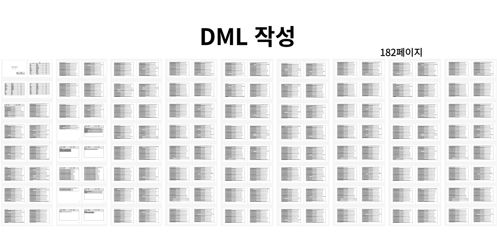
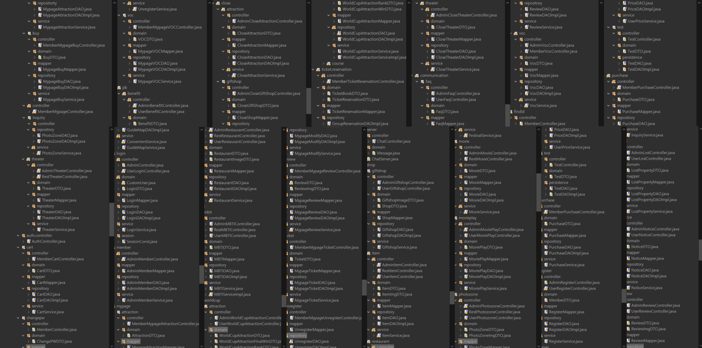
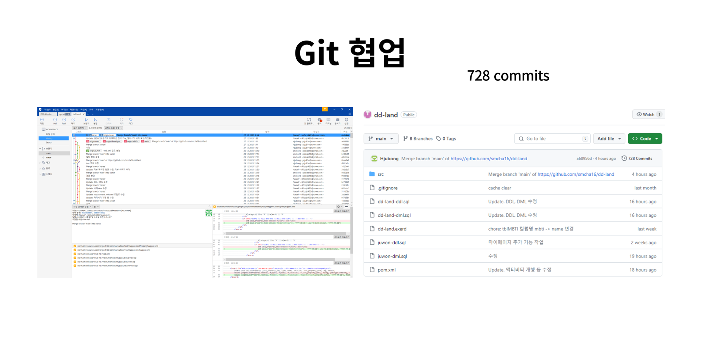
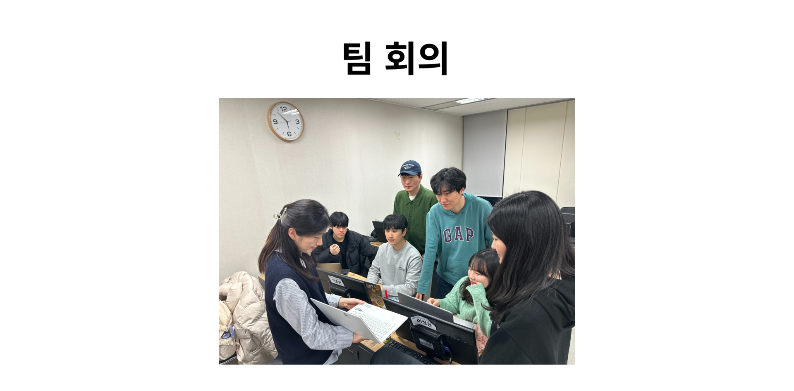

DD Land(놀이공원 웹사이트)
Project information
- 프로젝트명: DD Land
- 분류: Spring Project
- 주제: Spring Framework를 활용하여 제작한 놀이공원 웹사이트입니다. Servlet/JSP Project로 제작한 웹사이트를 기반으로 기존대비 향상된 관리자/사용자 인터페이스를 제공합니다.
- 개발 환경: HTML, CSS, JavaScript, jQuery, JSP, Java, Oracle Database 11g, Spring Tool Suite 3, Bootstrap, SQL Developer, DBeaver, eXERD, Draw.io, Google Drive, Git, GitHub, Sourcetree, AWS(EC2), Apache Tomcat
- 사용 기술: Spring MVC Pattern, Spring Security, Ajax, Open API, MyBatis, Elasticsearch, Web Socket, Modal, Restful API, Tiles
- 주요 기능: 액티비티·샵·티켓·할인·커뮤니티·이용 안내 등 조회 기능, 어트랙션 예약 기능, 어트랙션 추천 기능, 티켓 및 기프트샵 상품 구매 기능, 채팅 기능, 관리자 기능
- 담당 업무: 액티비티(어트랙션, 영화, 페스티벌, 포토존) 사용자/관리자 기능, Elasticsearch 검색 기능, AWS 배포
- 획득 역량: Elasticsearch를 이용한 검색 기능, AWS 배포
- 벤치마킹: 롯데월드 웹사이트
- 프로젝트 기간: 2023.12.18 ~ 2023.12.27 (10일)
- GitHub: https://github.com/NaraeP/dd-land
- URL: http://43.201.9.170:8080/dd/index.do
기획 배경
- 어트랙션 예약: 방문 당일 희망 시간에 미리 어트랙션을 예약하여 놀이공원 방문객의 편의성 추구
- 놀이기구 및 코스 추천: 개개인의 성향에 맞게 놀이기구 또는 코스를 추천하여 새로운 즐거움 추구
- 기프트샵 판매 물품 구매: 별도 놀이공원 방문 없이도 공원 내 기프트샵의 판매 물품을 온라인으로 구매 가능하도록하여 이용자 편의성 및 접근성 향상
- MVC Model 및 디자인 패턴 적용: 효과적인 설계를 위해 디자인 패턴 활용, 계층을 분리하여 유지보수성과 확장성 확보
구현 목표
-
사용자 친화적인 디자인 제공
- 회원/관리자 페이지 구분하여 별도 분리
- 반응형 웹을 활용한 모바일 최적화 제공
-
Web Socket 및 Open API 활용
- 사용자들간의 실시간 소통을 위해 Web Socket을 활용하여 채팅 기능 구현
- Open API를 사용하여 외부 데이터를 통한 다양한 정보 제공
-
Spring Security를 활용하여 인증 및 권한 부여
- Spring Security를 활용하여 회원/관리자별 권한 부여
-
Elasticsearch 활용
- Elasticsearch를 활용하여 검색 기능 구현
업무 분담
- 김형우: 요금/혜택, 로그인
- 박나래: 액티비티
- 이승원: 추천, 월드컵
- 이정은: 이용가이드, 운휴, 채팅
- 차민재: 샵, 티켓
- 차수민: 커뮤니티
- 황주원: 마이페이지
주요 구현 기능
❗하단 슬라이드의 좌/우 버튼을 클릭하여 구현 기능을 확인할 수 있습니다.
산출물
- 기획서
- 요구분석서 (48장)
- 순서도
- 데이터베이스 설계(ERD)
- 화면 설계서 (133장)
- 테이블 정의서(DDL) (71장)
- 데이터 정의서(DML) (182장)
- PPT
- 개발문서
- 요약본
| 기획서 | 요구분석서 | 순서도 |
|---|---|---|
|  |  |  |
| 데이터베이스 설계 | 화면 설계서 | DDL |
|  |  |  |
| DML | ||
|  |
개발 과정
- 프로젝트 구조 설계
- Git 협업
- 팀 회의
| 프로젝트 구조 설계 | Git 협업 | 팀 회의 |
|---|---|---|
|  |  |  |
개발 후기
Final Project로 스프링 프로젝트를 진행하며 그동안의 교육 과정에서 배웠던 모든 내용을 결과물로 만들 수 있어서 유의미한 경험이었다. 공부했던 기술들을 모두 사용해서 결과를 도출해 냈기 때문에 가장 재미있게 작업에 임했다.
또한 이번에는 새로운 주제로 프로젝트를 제작하는 것이 아니라, 바로 이전에 진행했던 Servlet/JSP 프로젝트에서 만든 결과물의 부족한 부분을 업그레이드하는 형식으로 진행되었기에 이전 프로젝트의 아쉬움을 달래며 조금 더 완성도 있는 결과물을 만들게 된 좋은 기회였다.
Spring MVC Pattern을 기반으로 Controller - Service - Dao - Dao Implement - Mapper의 계층 구조를 적용했는데 이를 위해 프로젝트 초반 패키지 구조를 수정할 때는 이 과정 자체가 왜 필요한가에 대한 의문으로 이해도 적용도 쉽진 않았다. 하지만 작업을 하며 실질적인 비즈니스 로직을 Service 클래스에서 작성하고 Controller에서는 정말 컨트롤의 역할을 하다 보니 유지 보수에 용이함과 메서드가 직관적이라는 장점을 깨달을 수 있었다. 이런 과정을 통해 결과적으로 이전 버전보다 더 나은 결과물을 만들었고, AWS를 사용해 배포를 진행하며 정말로 웹사이트 하나를 만들었다는 뿌듯함을 크게 느낄 수 있었다.
팀원으로서의 후기
이전 Servlet 프로젝트의 팀원들과 함께 버전 업 프로젝트로 스프링 프로젝트를 진행하며 팀원 간의 교류가 더 끈끈해져서 원활한 협업 작업을 할 수 있었다. 인원을 나누어 일부는 스프링 시큐리티를 담당하고 일부는 템플릿 제작 및 개발로 분담하여 일이 진행되어 빠른 속도로 진행될 수 있었다. 또한 이전 프로젝트에서 git을 사용하여 협업한 경험 덕에 이번에는 git 사용 중에도 큰 트러블 없이 진행될 수 있었다.
개발자 후기
이전 버전의 웹 페이지를 더 나은 버전으로 바꾸기 위해 '어떻게 구현할까?', '어떤 방식으로 접근할까?'라는 질문을 수도 없이 하며 그리고 결국엔 구현하는 과정을 통해 생각하는 힘과 구현하는 힘을 기를 수 있었다. 이번 프로젝트에서 Spring Security, Web Socket 파트는 담당 파트가 아니라 직접 구현해 보지 못해서 아쉬움이 남아 개인적으로 구현해 볼 예정이며, Elasticsearch의 사용에도 아쉬움이 남아 추후 개인 프로젝트를 진행하며 제대로 경험할 예정이다.
KPT 회고
KEEP
- RESTful API 사용
- 활발하게 git을 사용하여 커밋을 관리하는 협업 방식
- 회원/관리자별 페이지를 구분한 구현 방식
PROBLEM
- Servlet/JSP 프로젝트의 버전 업 프로젝트이나, 웹페이지 내 구현한 기능은 거의 동일하게 유지되었다는 것
- Elasticsearch의 장점을 활용할 수 있는 검색 기능이 아니라 일반적인 검색 기능에 Elasticsearch를 사용한 것
TRY
- P2 → Elasticsearch의 형태소 분석을 적극적으로 사용하는 검색 기능 구현
- 액티비티의 상세 페이지 구성 개선
- 페이지별로 노출되는 이미지의 크기가 상이 → 이에 따른 페이지별 이미지 처리